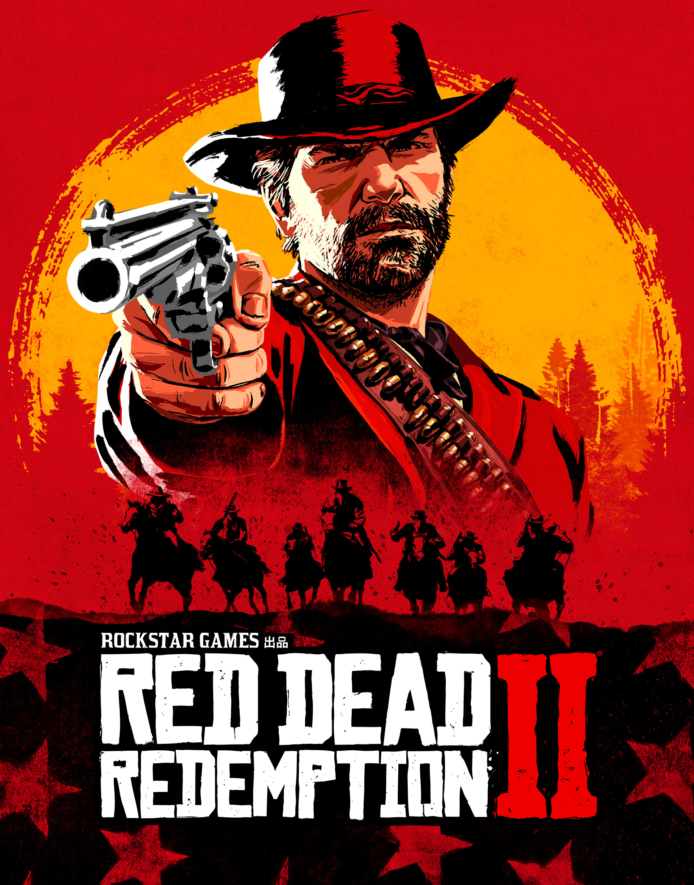

美国，1899 年。当警察开始打击残余亡命之徒的帮派时，蛮荒的西部时代迎来了最后的黄昏。不愿投降或是屈服的人，只有死路一条。
亚瑟·摩根和范德林德帮众在黑水镇的一次抢劫行动遭遇了始料不及的意外，他们不得不逃离这个西部小镇。联邦侦探和全国顶尖的赏金猎人在他们的身后穷追不舍，亚瑟一行人必须在广袤蛮荒的美国腹地上四处劫掠、挣扎求生。而帮派内部的矛盾分化日渐加深，摆在亚瑟面前的将是他无法避免的抉择：究竟是选择自己的理想，还是选择效忠于抚养了自己的帮派。
Red Dead Redemption 2 将于 11 月 5 日在 PC 推出，自 10 月 9 日起通过 Rockstar Games Launcher 预购的玩家可得特殊奖励。如需更多信息，请点击此处。